TAPERED BEAMS
Most aircraft structural components are tapered to improve structural efficiency. All the analysis done so far assumes the beams have uniform cross sections.
The effect of taper on direct stresses produces by bending moments are minimal if taper is small and the sectional properties are determined at the section analysed.
However the effect of taper on shear stresses is considerable.
SINGLE WEB BEAM
Consider an idealised section of beam of length δz in the x-y plane with 2 flanges and a web. At the RHS, it is subjected to a positive Moment Mx and Shear force Sy. The horizontal resultant forces carried by the booms due to the bending moment Mx are: Pz1 and Pz2, and are defined by the equation:
$$ P_z = σ_z B_z = B_z {M_x y}/{I_{xx}} $$Where Bz = idealised boom area
The FBD of the beam section is:
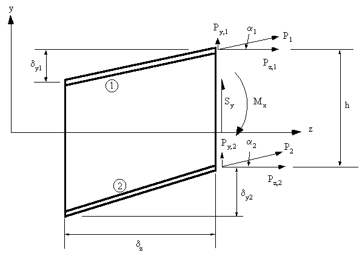 |
Figure 96: Effect of taper on single web beam analysis |
From observation, the vertical components of the axial forces carried by the booms are:
$$ P_{y1} = {δy_1}/{δz} P_{z1} \text" , " P_{y2} = {δy_2}/{δz} P_{z2} $$Note : The values for δy could be either negative or positive.
And from trigonometry, we can get that:
$$ P_1 = {P_{z1}} / {cos(α_1)} \text" , " P_2 = {P_{z2}}/ {cos(α_2)} $$Which can then be used to determine the effect of taper on the stresses in the booms.
Now, the internal shear force Sy is equal to the shear force carried by the web Syw + the shear forces carried by the booms, Py1 and Py2. Thus:
$$ S_y = S_{yw} + P_{y1} + P_{y2} $$Since we are interested in determining the shear force carried by the web, then by substituting gives:
$$ S_{yw} = S_y - P_z1 {δy_1}/{δz} - P_{z2} {δy_2}/{δz} $$For an idealised web, the shear flow is then given by :
$$ q_s = {S_{yw}}/h $$OPEN AND CLOSED BEAM SECTIONS
The effect of taper on open and closed beam section is exactly the same, and is defined by the analysis which follows.
Consider an idealised beam of length δz carrying positive shear loads Sy and Sx at the section z. The beam is also subjected to bending moments Mx and My which produce a direct stress σz in the booms.
Note : The skin is only effective in shear.
The FBD for this boom is:
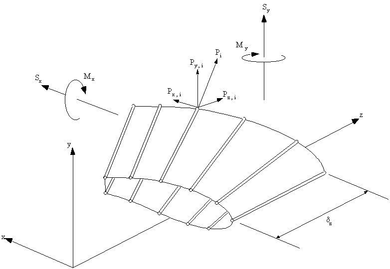 |
Figure 97: Effect of taper on the analysis of open or closed beam section |
In boom i, the direct stress in z direction is: σzi, and the component of axial force due to this stress in the z direction is:
$$ P_{zi} = σ_{zi} B_i $$where Bi is area of ith boom
Looking at the ith boom along the y-z and x-y axes gives:
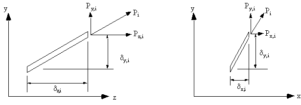 |
Figure 98: Effect of taper on ith beam of wing section |
From these figures the relationships between Pyi, Pxi, & Pzi can be derived:
$$ P_{yi} = P_{zi} {δ_{yi}}/{δz} \text" , " P_{xi} = P_{zi} {δ_{xi}}/{δz} $$where:
$$ δ_{xi} = x_{i+1} - x_i \text" , " δ_{yi} = y_{i+1} - y_i \text" , " δ_{zi} = z_{i+1} - z_i $$
Using these equations the true axial load in beam 'i' is:
$$ P_i = √{P_{xi}^2 + P_{yi}^2 + P_{zi}^2} $$or in terms of axial stress in z direction and taper is :
$$ P_i = {P_{zi}}/{δz} √ { δ_{xi}^2 + δ_{yi}^2 + δ_{zi}^2 } $$This equation give the effect of taper on the axial stress carried by the boom when this force is divided by the boom's true cross sectional area.
The shear loads Sy and Sx are reacted by the boom loads Pxi and Pyi and the shear flows in the skin and web panels, such that:
$$ S_x = S_{xw} + Σ_{i-1}^N P_{xi} \text" , " S_y = S_{yw} + Σ_{i=1}^N P_{yi} $$Substituting into this and re-arranging it gives that:
$$ S_{xw} = S_x - Σ_{i-1}^N P_{zi} {δ_{xi}}/{δz} \text" , " S_{yw} = S_y - Σ_{i=1}^N P_{zi} {δ_{yi}}/{δz} $$The shear flow distribution in either open or closed beam sections are found as before, except that instead of using Sy and Sx as the shear force terms you now use Sxw and Syw. Which is the fraction of the applied shear force carried by all skin and web panels.
Warning: When taking moments to determine shear centre or qs0 you must also consider the moments generated by all the Pxi and Pyi which are the fractions of the applied shear forces carried by the booms,
$$ Σ M_{applied} = Σ M_{q_b} + Σ M_{q_{s0}} + σ M_{P_{xi}} + Σ M_{P_{yi}} $$Example :
An idealised cantilever beam is uniformly tapered along its length in the x and y axis and carries a load of 100 kN at its free end. What are the boom forces and the shear flow distribution in the walls at a section 2 m from the built in end. The boom areas are B1 = B3 = B4 = B6 = 900 mm2, B2 = B5 = 1200 mm2
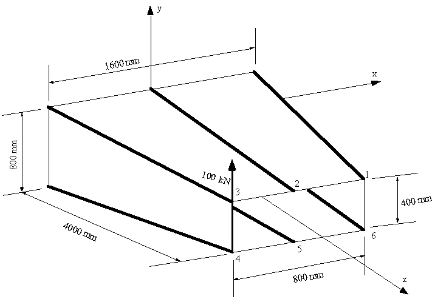 |
Figure 99: Tapered box beam |
The view of the cross section 2 m from the end is:
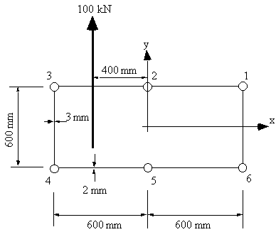 |
Figure 100: View of section 2 m from end |
At 2 m from the end Sy = 100 kN, Sx = 0, My = 0 , Mx = -200kNm.
a) Sectional Properties
Ixx = 4×900×300^2 + 2×1200×300^2 = 540×106 mm4
b) Determine Shear force carried by skin
Because of symmetry, Ixy = 0, so the direct stress equation becomes:
$$ σ_z = {M_x y}/{I_{xx}} $$Equation for direct force is:
$$ P_{zi} = σ_{zi} × B_i $$The best way to solve this problem is to create a table with all the necessary values.
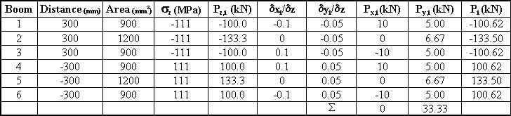
From this table we can then obtain the resultant shear load carried by the skin, so we get that: Syw = 100 - 33.33 = 66.67 kN, and Sxw = 0 - 0 = 0 kN
c) Determine Open Beam Shear Flow by cutting between booms 1 and 2
Because of symmetry, the equation simplifies to
$$ Δq_b = - {S_{yw}}/{I_{xx}} B_i y_i $$Substituting for Shear flow and sectional properties gives:
$$ Δ q_b = -1.23463 × 10^{-4} B_i y_i $$Applying this equation in a counterclockwise sense, starting with boom 2 gives:
q2-3 = -1.23463×10-4×1200×300 = -44.45 N/mm
q3-4 = -44.45 - 1.23463×10-4×900×300 = -77.78 N/mm
q4-5 = -77.78 + 1.23463×10-4×900×300 = -44.45 N/mm
q5-6 = -44.45 + 1.23463×10-4×1200×300 = 0 N/mm
q6-1 = 0 - 1.23463×10-4×900×(-300) = 33.34 N/mm
The section now looks like this:
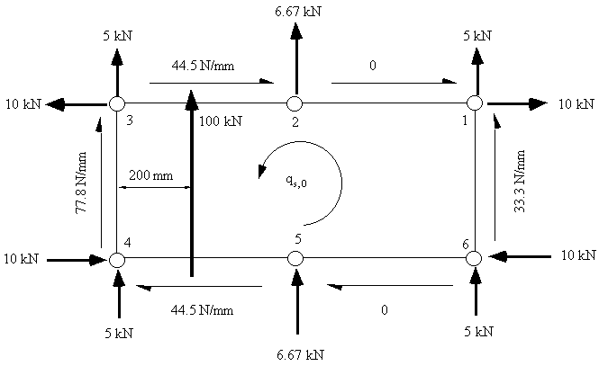 |
Figure 102: Diagram of open beam shear flows, shear forces carried by booms because of taper and qs,0 |
d) Determine qs0 and closed beam shear flow
To do this take moments at any point, in this case moments were taken about the line of web 3-4.
100x103 x 200 = 10000x300 - 44.447x600x300 + 6666.7x600 + 5000x1200 - 10000x300
+ 33.335x600x1200 - 10000x300 + 5000x1200 + 6666.7x600 -
44.447x600x300 + 10000x300 + 2x1200x600xqs,0
giving that qs0 = - 5.56 N/mm, and so, the shear flow distribution is
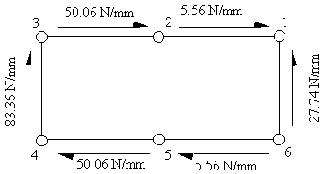 |
Figure 103: Final shear flow distribution in tapered beam at 2 m from fixed end |
EFFECT OF VARIABLE STRINGER AREAS ON SKIN SHEAR FLOW
Most aircraft have wings/fuselages which are tapered and contain stringers whose cross-sectional areas vary along their length.
This is done to maintain a constant stress along the length of the stringer.
Look at a single boom/stringer in y-z axis:
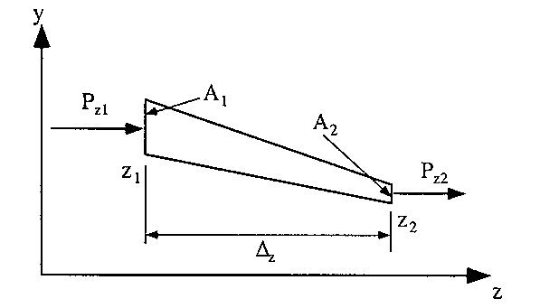 |
Figure 104: Diagram of variable area boom with axial loads Pz1 and Pz2 |
From this diagram we can determine the change in load carried by the stringer/boom per unit length, in other words the shear flow induced to the boom to by this change in load due to the area change or taper.
If it is assumed that the stringer load varies linearly between these two points then:
$$ Δq = {P_{zq} - P_{z2}}/{z_1 - z_2} = {ΔP}/{Δz} $$The shear flow is then determined by:
1) Determine shear flow equilibrium for each boom
2) Equate all shear flows as a function of one of the shear flows
3) Equate shear flow moments with externally applied moments.
EXAMPLE :
Determine the shear flow distribution in the beam of example 13 by considering the variation in load at either side of the specified location. Boom areas are: B1 = B3 = B4 = B6 = 900 mm2, B2 = B5 = 1200 mm2.
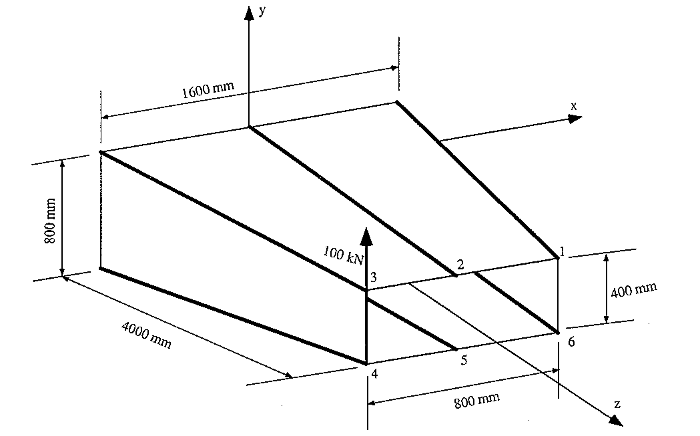 |
Figure 105: Tapered Beam Box |
The view of the cross section 2 m from the end is:
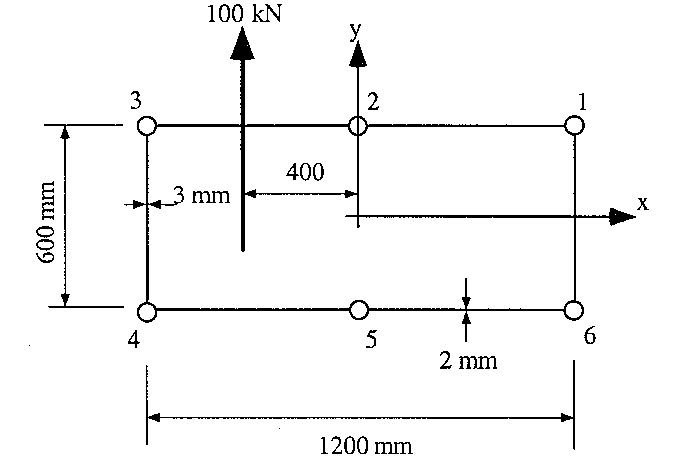 |
Figure 106: View of section 2 m from end |
What is now required is the determination of the direct forces carried by the booms at either side of this section. We do this by looking at locations on either side of this one, and very close to it.
a) Determine sectional properties at z = 1900 mm where height = 610 mm, width = 1220 mm, Mx =-210 MNmm
$$ I_{xx} = 4×900×305^2 + 2×1200×305^2 = 558.15×10^6 {mm}^4 $$b) Determine sectional properties at z= 2100 mm where height = 590 mm, width = 1180 mm, Mx = -190 MNmm
$$ I_{xx} = 4×900×295^2 + 2×1200×295^2 = 522.15x10^6 {mm}^4 $$c) Determine axial loads carried by booms at two locations and induced shear flow
| Boom | Area(mm2) | h1 (mm) | σz (MPa) | Pz1 (kN) | h2 (mm) | σz (MPa) | Pz2 (kN) | Δq (N/mm) |
|---|---|---|---|---|---|---|---|---|
| 1 | 900 | 305 | -115 | -103.28 | 295 | -107 | -96.61 | 33.34 |
| 2 | 1200 | 305 | -115 | -137.70 | 295 | -107 | -128.81 | 44.46 |
| 3 | 900 | 305 | -115 | -103.28 | 295 | -107 | -96.61 | 33.34 |
| 4 | 900 | -305 | 115 | 103.28 | -295 | 107 | 96.61 | -33.34 |
| 5 | 1200 | -305 | 115 | 137.70 | -295 | 107 | 128.81 | -44.46 |
| 6 | 900 | -305 | 115 | 103.28 | -295 | 107 | 96.61 | -33.34 |
Now that the booms induced shear flow are know a FBD needs to be drawn.
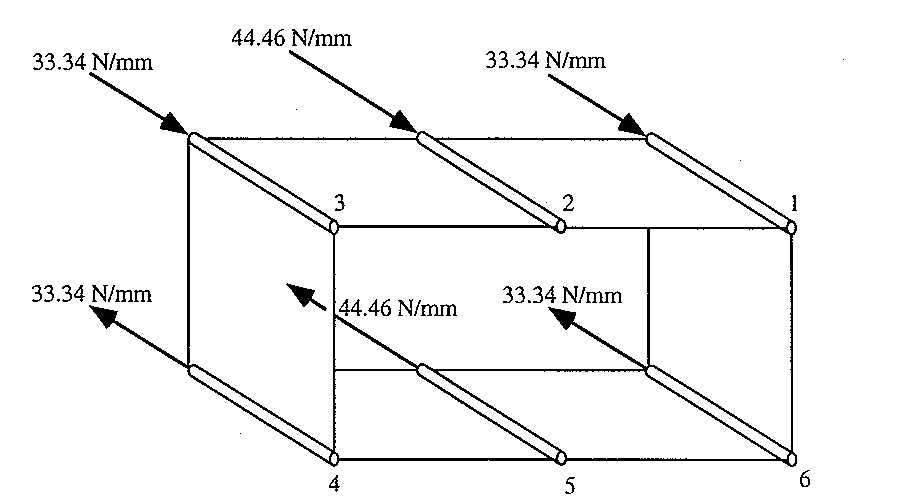 |
Figure 109: Shear flow induced by booms direct load differential |
d) Determine skin shear flows
To do this it is necessary to draw a do a free body diagram of each boom and carry out force equilibrium
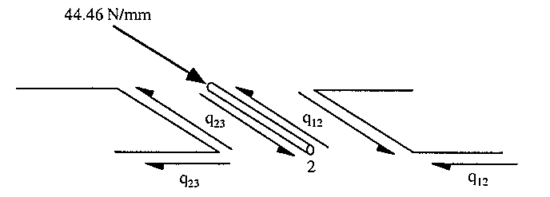 |
Figure 109: Free body diagram showing equilibrium of boom 2 |
Because these shear flows act over the same length, equating equilibrium for boom 2 gives:
$$ -q_{12} + 44.46 + q_{23} = 0 $$giving that:
$$ q_{23} = q_{12} - 44.46 $$By then constructing a FBD of all the booms and equating them to equilibrium the following equations can be obtained:
$$q_{34} = q_{12} - 77.8 $$ $$q_{45} = q_{12} - 44.46 $$ $$q_{56} = q_{12} $$ $$q_{61} = q_{12} + 33.34 $$e) Equate moments about any point, for this example the centre of symmetry was selected.
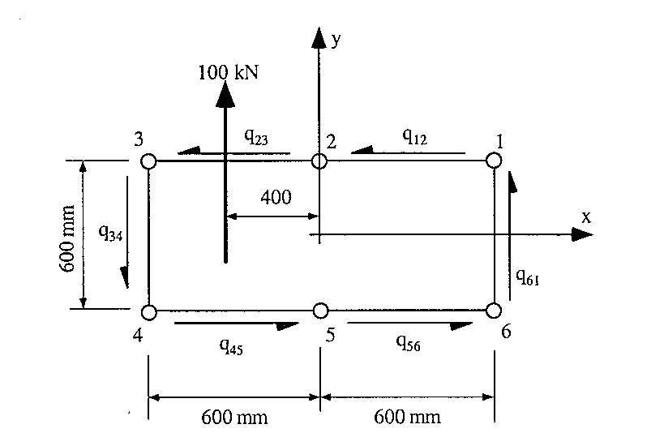 |
Figure 110: Diagram showing the shear flows and applied loads at analysed section |
Take moments about the centre of symmetry of the section to obtain the following equation:
$$ -100×10^3×400 = 600×300(q_{12} + q_{23} + q_{45} + q_{56}) + 600×600(q_{34} + q_{61}) $$and by substituting the above equations for the different shear flows, it gives:
$$ q_{12} = —5.548 \text" N/mm" $$and substituting this value into the above equations gives:
$$ q_{23} = -50 \text" N/mm" $$ $$ q_{34} = -83.348 \text" N/mm" $$ $$ q_{45} = -50 \text" N/mm" $$ $$ q_{56} = -5.548 \text" N/mm" $$ $$ q_{61} = 27.792 \text" N/mm" $$and the shear flow distribution will look like this:
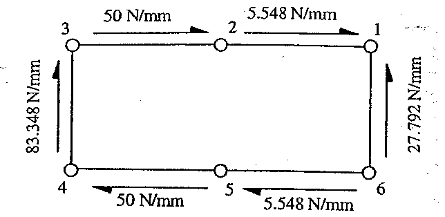 |
Figure 111: Final shear flow distribution for section 2 m from end |
These results are almost identical with the results of the previuos example which were:
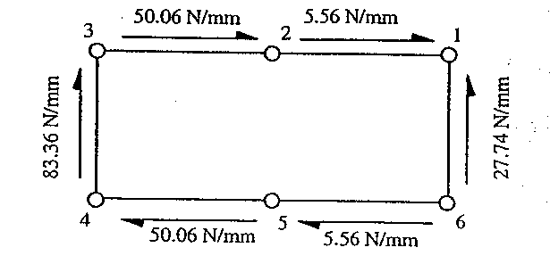 |
Figure 112: Shear flow distribution for the same section but using the method of prior example |
Note: When doing a complete wing or fuselage analysis, the procedure explained here should be carried out to a series of sections along the length of their span. With interval lengths being reasonably small compared to the length of the wing/fuselage.